Zennの「QA」のフィード
フィード
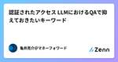
認証されたアクセス LLMにおけるQAで抑えておきたいキーワード
Zennの「QA」のフィード
認証されたアクセスとは LLM（Large Language Models）における「認証されたアクセス」は、システムやデータへのアクセスを許可されたユーザーやアプリケーションに限定するプロセスを指します。これは、モデルの品質保証（QA）とセキュリティの観点から非常に重要な要素です。以下にそれぞれの観点から詳しく説明します。 https://youtube.com/shorts/ZsTr0tFQct0?feature=share QA（品質保証）の観点からの認証されたアクセス 一貫したデータ品質の維持 認証されたアクセスにより、データ入力やモデルへのフィードバックが信頼でき...
1日前
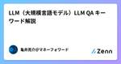
LLM（大規模言語モデル）LLM QA キーワード解説
Zennの「QA」のフィード
LLMとは LLM（大規模言語モデル）は、自然言語処理（NLP）の分野で使用される機械学習モデルであり、大量のテキストデータを学習して自然言語を理解し、生成する能力を持っています。これらのモデルは、言語の統計的パターンを把握するために数億から数千億のパラメータを持つことが一般的で、非常に大規模なニューラルネットワークアーキテクチャに基づいています。以下では、LLMの品質保証（QA）の観点から、その重要性、応用、課題について詳しく解説します。 https://youtube.com/shorts/hfduTP2tVwU LLMの重要性 自然言語理解と生成 LLMは、文章の意味...
2日前
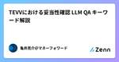
TEVVにおける妥当性確認 LLM QA キーワード解説
Zennの「QA」のフィード
TEVVにおける妥当性確認とは TEVV（試験、評価、検証、妥当性確認）とは、システムやソフトウェアの品質を保証するための重要なプロセスです。これは特に、機械学習モデルや大規模言語モデル（LLM: Large Language Models）においても適用されます。以下では、LLMの品質保証（QA）の観点から、TEVVの各要素について詳しく解説します。 https://youtube.com/shorts/hnTTIzJThqU?feature=share 妥当性確認（Validation） 目的 妥当性確認は、LLMが実際の使用環境で期待された機能を提供し、ユーザーのニーズを...
3日前
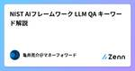
NIST AIフレームワーク LLM QA キーワード解説
Zennの「QA」のフィード
NIST AIフレームワークとは NIST AIフレームワーク（NIST AI Framework）は、アメリカ国立標準技術研究所（NIST: National Institute of Standards and Technology）が策定した、人工知能（AI）システムの開発、運用、および評価に関するガイドラインです。このフレームワークは、AI技術の品質、信頼性、安全性を確保するための標準的な手法を提供します。以下では、LLM（大規模言語モデル）の品質保証（QA）の観点からNIST AIフレームワークについて詳しく解説します。 https://youtube.com/shorts...
4日前
QA・コミュニケーションアンチパターン バグを見つけてくれた Podcast
Zennの「QA」のフィード
Podcast https://podcasters.spotify.com/pod/show/-qa-in-devops/episodes/QA-e2lvsvv YouTube https://youtu.be/LvjvtyEUG4A
5日前
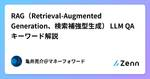
RAG（Retrieval-Augmented Generation、検索補強型生成） LLM QA キーワード解説
Zennの「QA」のフィード
RAG（Retrieval-Augmented Generation、検索補強型生成）とは RAG（Retrieval-Augmented Generation、検索補強型生成）は、大規模言語モデル（LLM: Large Language Models）を強化するための手法の一つで、情報検索と生成モデルを組み合わせることで、より正確でコンテクストに沿った応答を生成する方法です。この手法は、生成された応答の信頼性と品質を向上させるために非常に有効です。以下では、LLMの品質保証（QA）の観点から、RAGの重要性と具体的な仕組みについて詳しく解説します。 https://youtube....
6日前
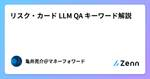
リスク・カード LLM QA キーワード解説
Zennの「QA」のフィード
リスク・カードとは リスク・カード（Risk Cards）は、機械学習モデルや大規模言語モデル（LLM: Large Language Models）の開発と運用における潜在的なリスクを特定し、評価し、管理するためのドキュメントです。これらは、モデルの品質保証（QA）の一環として重要な役割を果たします。以下では、LLMのQA観点からリスク・カードについて詳しく解説します。 https://youtube.com/shorts/QsEEGL1CFcQ?feature=share リスク・カードの目的 リスク・カードの主な目的は次の通りです リスクの特定 モデル開発および運用に...
7日前
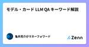
モデル・カード LLM QA キーワード解説
Zennの「QA」のフィード
モデル・カードとは モデル・カード（Model Cards）は、機械学習モデルや大規模言語モデル（LLM: Large Language Models）の透明性、理解、評価を促進するために使用されるドキュメントです。これらは、モデルの設計、トレーニング、評価、適用範囲、および制限に関する重要な情報を提供します。以下では、LLMの品質保証（QA）の観点から、モデル・カードの重要性と具体的な内容について詳しく解説します。 https://youtube.com/shorts/2wC6WqWrRlM?feature=share モデル・カードの目的 モデル・カードの主な目的は以下の通り...
8日前
「シフトレフト」はどこからきたのか 1
1
Zennの「QA」のフィード
「シフトレフト」についてお話させていただく機会を頂いたので調べています。昨今「シフトレフト」は品質保証業界に限らず使われる言葉になってきていると思っています。その出典と、これからについて少し想いを馳せてみたいと思いました。 chatGPTさんに聞いてみた 「シフトレフトとは」 「シフトレフト」（Shift Left）という用語は、ソフトウェア開発およびテストプロセスにおいて、テストや品質保証の活動をより早い段階で行うことを指します。従来のウォーターフォール開発モデルでは、テストは開発の後半、つまり右側に位置していました。これに対して、シフトレフトはテストを開発の早期段階、つまり左側...
9日前
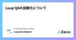
Luup QAの自動化について
Zennの「QA」のフィード
はじめに こんにちは、LuupのQAチーム所属のかすみです。 手動でQAを行っているといつかは「自動化」という観点が出てきます。 品質を担保するにはQAの範囲は広い方がいいと思っています。 ただ、手動で全てをやるには限界があります。（物理的にもそうでなくても） そこで、その負担を軽減できる「自動化」を導入するQAチームは少なくありません。 Luupのモバイルアプリの自動化チームも立ち上げ期間を経て最近運用フェーズに入ってきましたので、今回は自動化について紹介したいと思います。 そもそもの背景 モバイルアプリの手動QAチームはFeatureテストとRegressionテストを7〜...
11日前
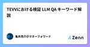
TEVVにおける検証 LLM QA キーワード解説
Zennの「QA」のフィード
TEVVにおける検証とは TEVV（試験、評価、検証、妥当性確認）とは、システムやソフトウェアの品質を保証するための重要なプロセスです。これは特に、機械学習モデルや大規模言語モデル（LLM: Large Language Models）においても適用されます。以下では、LLMの品質保証（QA）の観点から、TEVVの各要素について詳しく解説します。 https://youtube.com/shorts/5plg0-_zdgY?feature=share 検証（Verification） 目的 検証は、LLMが設計仕様や要件を満たしているかどうかを確認するプロセスです。これは、モデ...
11日前
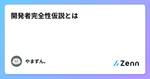
開発者完全性仮説とは
Zennの「QA」のフィード
はじめに 本記事は、「開発者完全性仮説」という概念について説明します。 開発者完全性仮説は、ソフトウェア開発、その中でも品質保証に従事するプロフェッショナルとして向き合っていくべき大切な概念です。 開発者完全性仮説は品質保証に従事する人々の職場での存在意義を揺さぶり、自分自身がどのように価値を残しているのかを改めて言語化するのに役立ちます。 開発者完全性仮説の原典 開発者完全性仮説とは、以下の引用文で端的に表せます。 「開発者が完璧だったらテストやQAはいらない」 「完璧なスクラムチームだったら（以下略）」 JaSST nano vol.13 #4「もうQAはいらない」ってホ...
12日前
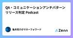
QA・コミュニケーションアンチパターン リリース判定 Podcast
Zennの「QA」のフィード
Podcast https://podcasters.spotify.com/pod/show/-qa-in-devops/episodes/QA-e2lvsu5 YouTube https://youtu.be/vEPwg_XX2hc
12日前
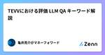
TEVVにおける評価 LLM QA キーワード解説
Zennの「QA」のフィード
TEVVにおける評価とは TEVV（試験、評価、検証、妥当性確認）とは、システムやソフトウェアの品質を保証するための重要なプロセスです。これは特に、機械学習モデルや大規模言語モデル（LLM: Large Language Models）においても適用されます。以下では、LLMの品質保証（QA）の観点から、TEVVの各要素について詳しく解説します。 https://youtube.com/shorts/uVD2zZUtacA?feature=share 評価（Evaluation） 目的 評価は、LLMの性能と品質を定量的に測定するプロセスです。これはモデルが実際の使用条件下でど...
13日前

TEVVにおける試験 LLM QA キーワード解説
Zennの「QA」のフィード
TEVVにおける試験とは TEVV（試験、評価、検証、妥当性確認）とは、システムやソフトウェアの品質を保証するための重要なプロセスです。これは特に、機械学習モデルや大規模言語モデル（LLM: Large Language Models）においても適用されます。以下では、LLMの品質保証（QA）の観点から、TEVVの各要素について詳しく解説します。 https://youtube.com/shorts/rrjRcAsaBpo?feature=share 試験（Testing） 目的 試験は、LLMが期待される機能を正しく実行し、意図した結果を提供するかどうかを確認するためのプロセ...
14日前
TEVV（試験、評価、検証、妥当性確認） LLM QA キーワード解説
Zennの「QA」のフィード
TEVV（試験、評価、検証、妥当性確認）とは TEVV（試験、評価、検証、妥当性確認）とは、システムやソフトウェアの品質を保証するための重要なプロセスです。これは特に、機械学習モデルや大規模言語モデル（LLM: Large Language Models）においても適用されます。以下では、LLMの品質保証（QA）の観点から、TEVVの各要素について詳しく解説します。 https://youtube.com/shorts/NBTketLxAuk?feature=share 1. 試験（Testing） 目的 試験は、LLMが期待される機能を正しく実行し、意図した結果を提供するかど...
15日前
Nstock QAの旅 #1 品質に対して思うことをチームで相互理解してみる
Zennの「QA」のフィード
こんにちは！jagaです 🥔 私が所属するNstockでは現在、QAエンジニアがいません。 QAエンジニアの採用活動を進めていますが苦戦しています。 そこで、令和トラベルでQAエンジニアをされているmiisanの協力を得て、できることから始めることにしました。 品質を上げていきたい！ 暑い夏が終わりかけた、ある日のこと。 Nstock初めての受注が見えてきました。 当時、死活監視やテストをあたりまえに書く文化は存在し、障害やヒヤリハットの発生時にポストモーテムを書き貯めることもできていました。 ですが受注をきっかけに、「今提供できている品質で十分だろうか？」「品質をもっと上げられるん...
15日前
モデルの盗難 LLM QA キーワード解説
Zennの「QA」のフィード
モデルの盗難 モデルの盗難（Model Theft）とは、機械学習モデルやディープラーニングモデルが不正にコピーされ、無断で使用されることを指します。これは特に、自然言語処理（NLP）や画像認識などの分野で使われる大規模言語モデル（LLM: Large Language Models）において問題となっています。モデルの盗難は、知的財産権の侵害やビジネス上の損失を引き起こす可能性があり、品質保証（QA）の観点からも対策が重要です。以下に、LLMのQA観点からモデルの盗難について詳しく解説します。 https://youtube.com/shorts/kW1g1jQRhsk?featu...
16日前
QA組織を立ち上げたらリプレイスも経験した話
Zennの「QA」のフィード
はじめに 株式会社ビットキーでQAをしているやきょ(@yakyo_824)と申します。 前回、こちらの記事では大枠としてQA組織がどういう変遷をたどったかについて説明しました。 その中で別記事にて公開予定としていた「組織体制変更における取り組みや課題と、それをどう乗り越えたか」について、この記事で話していきたいと思います。 対象読者 -他社のQA組織状況に興味がある方 -他社のQA組織に関する課題とその解決に興味がある方 QAチーム設立の背景と、その初期 ビットキーは創業後、いち早くアウトソーシングを活用し、事業のスピードを落とさずに品質を守ってきました。 ただ、アウトソーシ...
17日前
ファジングテスト DevOpsとマイクロサービス時代のQA キーワード解説
Zennの「QA」のフィード
ファジングテストとは ファジングテスト（Fuzzing Test）は、ソフトウェアのセキュリティと安定性を評価するためのテスト手法の一つで、ランダムまたは予期しない入力データを大量に生成し、システムやアプリケーションに対してそのデータを送信して、異常動作やクラッシュを引き起こす潜在的な脆弱性を検出することを目的としています。以下では、QA（品質保証）の観点からファジングテストについて詳しく説明します。 https://youtube.com/shorts/BWCUJ4SIs9Y?feature=share ファジングテストの目的 ファジングテストの主な目的は以下の通りです 脆...
17日前